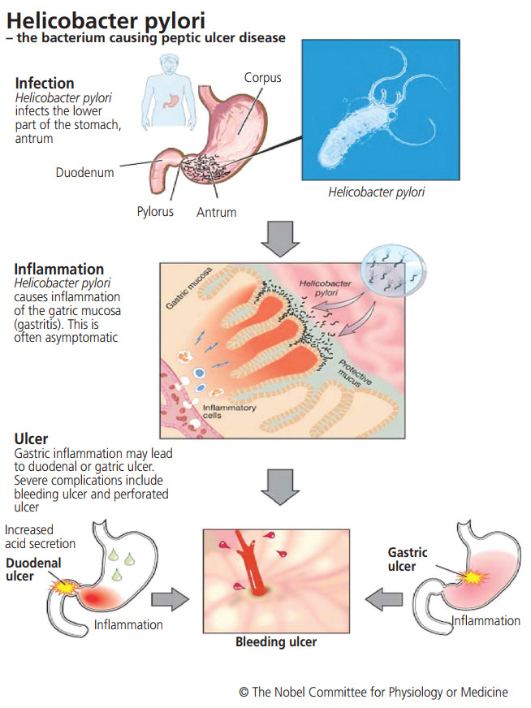
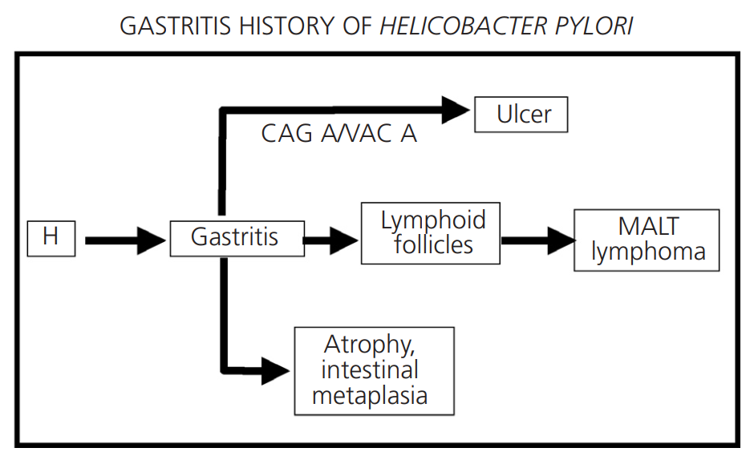
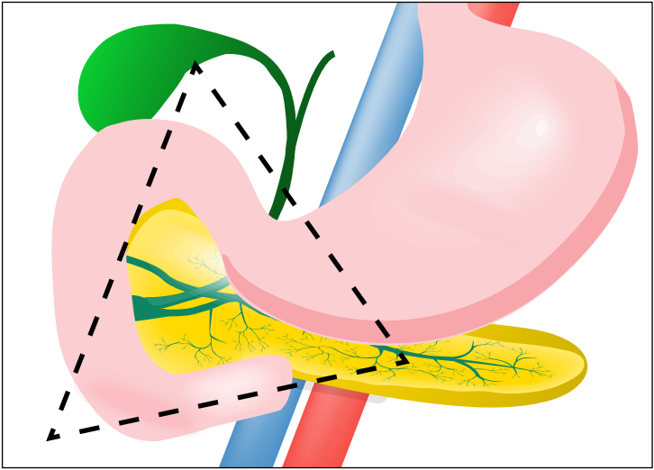

SINH LÝ BỆNH & CƠ CHẾ BỆNH SINH LOÉT DẠ DÀY - TÁ TRÀNG
Peptic Ulcer Disease (PUD) Pathophysiology & Pathogenesis — Phân tích toàn diện sự phá vỡ cân bằng bảo vệ - tấn công niêm mạc, kiểu hình nhiễm khuẩn Helicobacter pylori, độc tính phân tử của NSAIDs, hội chứng Zollinger-Ellison (ZES), cơ chế vi môi trường cản trở đông máu cục bộ và chuỗi phản ứng viêm toàn thân trong biến chứng thủng loét.
Loét dạ dày - tá tràng (Peptic Ulcer Disease - PUD) là tổn thương khuyết sâu ở niêm mạc dạ dày hoặc tá tràng, vượt qua lớp cơ niêm (muscularis mucosae) và ăn sâu vào lớp dưới niêm mạc. Bệnh sinh bắt nguồn từ sự mất cân bằng động giữa các cơ chế phòng vệ niêm mạc tự nhiên và các yếu tố tấn công ăn mòn mô học nội sinh hoặc ngoại sinh.
Phần I: Thăng bằng Sinh lý Niêm mạc & Sự Mất Cân Bằng Sinh Bệnh Học
Trong điều kiện sinh lý bình thường, cấu trúc niêm mạc đường tiêu hóa trên luôn được duy trì nguyên vẹn nhờ một trạng thái cân bằng động tinh vi giữa hệ thống phòng thủ bảo vệ niêm mạc và các yếu tố tấn công ăn mòn.
- Hàng rào chất nhầy - Bicarbonate (Mucus-HCO3- barrier): Lớp gel nhầy ưa nước liên kết chặt với ion HCO3- tạo ra một gradient pH trung tính (pH ~7.0) ngay sát bề mặt tế bào biểu mô, bất chấp pH trong lòng dạ dày có thể rơi xuống mức 1.0 - 2.0.
- Tính toàn vẹn & Tái sinh biểu mô (Epithelial Restitution): Tế bào biểu mô liên kết với nhau bằng các thể nối vòng bịt (tight junctions) ngăn cản sự khuếch tán ngược của ion H+. Biểu mô tổn thương được phục hồi nhanh chóng thông qua sự trượt và di cư của các tế bào biểu mô kế cận trong vòng vài phút đến vài giờ.
- Dòng máu tưới niêm mạc (Mucosal Blood Flow): Đảm bảo cung cấp oxy, glucose, đồng thời cuốn trôi và trung hòa nhanh chóng lượng ion H+ thẩm thấu ngược vào lớp đệm.
- Prostaglandin E2 (PGE2) & PGI2: Chất điều hòa thể dịch chỉ huy tối cao, kích thích tế bào biểu mô tiết chất nhầy, tiết HCO3-, duy trì tưới máu vi mạch và ức chế trực tiếp bài tiết acid từ tế bào thành.
- Acid Clohydric (HCl): Được bài tiết bởi tế bào thành (parietal cells) qua bơm proton H+/K+-ATPase, đóng vai trò hoạt hóa pepsinogen và phân giải liên kết ngoại bào.
- Enzyme Pepsin: Enzyme phân giải protein nội sinh hoạt động mạnh nhất ở pH 1.5 - 3.5, có khả năng tiêu hóa trực tiếp lớp chất nhầy bảo vệ và khung collagen ngoại bào của niêm mạc.
- Nhiễm khuẩn Helicobacter pylori: Vi sinh vật cư trú giải phóng độc tố tế bào, cytokine viêm và men urease phá vỡ lớp gel nhầy.
- Thuốc kháng viêm không steroid (NSAIDs) & Aspirin: Ức chế tổng hợp prostaglandin toàn thân và gây tổn thương độc tính tế bào tại chỗ.
- Yếu tố lối sống & Tâm thần: Hút thuốc lá (giảm tưới máu niêm mạc và giảm tiết bicarbonate tá tràng), rượu nồng độ cao (hòa tan lớp lipid màng tế bào biểu mô), và stress tâm lý nặng (kích hoạt trục giao cảm gây co thắt vi mạch dạ dày).
Phần II: Vai Trò & Cơ Chế Sinh Bệnh Học của Vi Khuẩn Helicobacter pylori
Helicobacter pylori là trực khuẩn Gram âm hình xoắn, có chùm lông roi đơn cực, cư trú chuyên biệt ở lớp chất nhầy bao phủ biểu mô dạ dày. Vi khuẩn tồn tại được trong môi trường acid dịch vị khắc nghiệt nhờ sở hữu enzyme Urease cực mạnh, thủy phân urea thành amoniac (NH3) và CO2, tạo ra một "đám mây vi khí hậu kiềm tính" che chắn xung quanh thân vi khuẩn.
1. Phân nhánh Bệnh lý Dựa Trên Vùng Dạ Dày Định Cư & Phản Ứng Viêm Ký Chủ
Tùy thuộc vào vị trí định cư chiếm ưu thế của vi khuẩn và cường độ đáp ứng miễn dịch của cơ thể ký chủ, nhiễm H. pylori sẽ dẫn đến các biểu hiện bệnh học hoàn toàn khác nhau:
Cơ chế: Vi khuẩn tập trung chủ yếu ở hang vị, gây viêm mạn tính và phá hủy các tế bào D (tiết somatostatin). Sự thiếu hụt somatostatin làm mất cơ chế kìm hãm ức chế ngược đối với tế bào G, dẫn đến phóng thích ồ ạt hormone Gastrin vào máu.
Hậu quả: Tăng gastrin máu kích thích tế bào thành vùng thân vị tăng sản và sản xuất acid HCl cực độ (hyperchlorhydria). Lượng acid dịch vị khổng lồ này tràn xuống hành tá tràng, vượt quá khả năng đệm của bicarbonate, gây dị sản dạ dày ở tá tràng (gastric metaplasia), tạo điều kiện cho vi khuẩn bám dính và tạo thành Loét Tá Tràng (Duodenal Ulcer - DU).
Cơ chế: Vi khuẩn lan tỏa lên phần thân và đáy dạ dày. Quá trình thâm nhiễm tế bào viêm giải phóng cytokine (IL-1β, TNF-α) gây phá hủy trực tiếp các tế bào thành (parietal cells) và tuyến dạ dày.
Hậu quả: Dẫn đến teo niêm mạc dạ dày mạn tính và giảm tiết acid (hypochlorhydria). Thể bệnh này làm mất khả năng bảo vệ của niêm mạc, dẫn đến Loét Dạ Dày (Gastric Ulcer - GU), thúc đẩy chuỗi biến đổi dị sản ruột → nghịch sản → Ung thư biểu mô tuyến dạ dày (Gastric Adenocarcinoma).
Cơ chế & Hậu quả: Vi khuẩn phân bố rải rác đều khắp dạ dày mà không gây tổn thương ưu thế vùng nào. Không làm biến đổi đáng kể tổng lượng acid dịch vị, chỉ biểu hiện tăng nhẹ gastrin máu đơn thuần và đa số người mang khuẩn không có triệu chứng lâm sàng rõ rệt.

2. Lịch Trình Tự Nhiên & Các Yếu Tố Độc Lực (CagA, VacA)
Khi nhiễm khuẩn mạn tính không được tiệt trừ, tiến trình viêm dạ dày nông tiến triển theo thời gian dẫn đến tổn thương cấu trúc vĩnh viễn thông qua các yếu tố độc lực của vi khuẩn:
- Độc tố CagA (Cytotoxin-associated gene A): Protein độc lực được vi khuẩn "tiêm" trực tiếp vào tế bào biểu mô ký chủ qua hệ thống tiết loại IV (Type IV Secretion System). CagA bị phosphoryl hóa bởi kinase tế bào, kích hoạt dòng thác tín hiệu nội bào gây biến dạng khung xương tế bào (hiện tượng "hummingbird phenotype"), phá vỡ các liên kết vòng bịt và kích thích tăng sinh bất thường.
- Độc tố tạo không bào VacA (Vacuolating cytotoxin A): Tạo thành các kênh vận chuyển ion ở màng ty thể, kích hoạt dòng thác caspase giải phóng cytochrome c dẫn đến quá trình chết theo chương trình (apoptosis) của tế bào biểu mô niêm mạc.

Phần III: Cơ Chế Bệnh Sinh của Loét do Thuốc Kháng Viêm Không Steroid (NSAIDs)
Thuốc kháng viêm không steroid (NSAIDs), bao gồm cả Aspirin liều thấp (LDA), là nguyên nhân hàng đầu gây tổn thương loét và biến chứng xuất huyết tiêu hóa ở bệnh nhân không nhiễm H. pylori. NSAIDs phá hủy niêm mạc qua hai cơ chế độc lập nhưng hiệp đồng chặt chẽ:
Cơ chế phân tử: Enzyme COX-1 được biểu hiện thường trực ở biểu mô dạ dày, chịu trách nhiệm chuyển hóa acid arachidonic thành các prostaglandin bảo vệ (PGE2, PGI2).
Hậu quả: Sự ức chế men COX-1 dẫn đến sự cạn kiệt Prostaglandin hệ thống, tước đi khả năng: (1) Tiết chất nhầy gel; (2) Tiết ion HCO3- kiềm hóa bề mặt; (3) Duy trì lưu lượng tưới máu vi mạch nuôi dưỡng niêm mạc; (4) Tái sinh phân chia tế bào biểu mô.
Cơ chế hóa lý: Phần lớn NSAIDs là các acid hữu cơ yếu có pKa từ 3.0 đến 5.0. Trong môi trường acid dạ dày (pH ~2.0), chúng tồn tại ở dạng không ion hóa, có tính thân lipid cao và khuếch tán tự do qua lớp phospholipid kép vào bào tương tế bào biểu mô.
Hậu quả: Khi vào môi trường nội bào trung tính (pH ~7.2), NSAIDs lập tức bị phân ly thành dạng ion hóa mang điện tích âm và bị giữ bẫy hoàn toàn bên trong tế bào. Nồng độ tích tụ cao nội bào gây mất ghép phosphoryl hóa oxy hóa ty thể, cạn kiệt ATP, phá vỡ khung xương tế bào, làm rách lớp đệm và tăng tính thấm niêm mạc nghiêm trọng.
3. Phân Loại Mức Độ Nguy Cơ Tiêu Hóa Của Các Thuốc NSAIDs Thông Dụng
Các thuốc NSAID khác nhau có tỷ lệ ức chế chọn lọc COX-1/COX-2 và độc tính tế bào khác nhau, quyết định mức độ nguy cơ gây loét và xuất huyết trên lâm sàng:
| Phân nhóm Nguy cơ Tiêu hóa | Mức độ Tương đối | Danh mục Thuốc NSAID Đại diện | Đặc điểm Sinh lý Dược học |
|---|---|---|---|
| Nguy cơ thấp (Low Risk) | RR ~ 1.0 - 2.0 | Ibuprofen (liều thấp), Aceclofenac, Celecoxib | Ức chế chọn lọc ưu thế COX-2 hoặc thời gian bán thải ngắn, ít gây ức chế COX-1 bảo vệ dạ dày. |
| Nguy cơ trung bình (Intermediate Risk) | RR ~ 2.0 - 4.0 | Diclofenac, Meloxicam, Naproxen, Sulindac, Ketoprofen | Ức chế đồng thời cả COX-1 và COX-2, gây giảm đáng kể nồng độ prostaglandin niêm mạc khi dùng kéo dài. |
| Nguy cơ cao (High Risk) | RR > 4.0 - 9.0 | Indomethacin, Piroxicam, Ketorolac, Tenoxicam, Azapropazone | Ức chế cực mạnh COX-1, thời gian bán thải kéo dài và gây độc tính trực tiếp ty thể mức độ nặng tại chỗ. |
Phần IV: Sinh Lý Bệnh Hội Chứng Zollinger-Ellison (ZES) - Thể Loét Tăng Toan Cực Độ
Hội chứng Zollinger-Ellison (ZES) là bệnh lý hiếm gặp nhưng đặc biệt nghiêm trọng, đặc trưng bởi sự hình thành các ổ loét dạ dày - tá tràng dữ dội, kháng trị và tái phát nhanh, gây ra bởi một khối u thần kinh nội tiết tiết gastrin (Gastrinoma).
Hơn 80% khối u gastrinoma khu trú tại một vùng giải phẫu hình tam giác được giới hạn bởi 3 mốc:
- Đỉnh trên: Điểm nối của ống túi mật và ống mật chủ (hoặc tĩnh mạch cửa gan).
- Đỉnh dưới: Điểm nối giữa đoạn 2 (D2) và đoạn 3 (D3) của tá tràng.
- Đỉnh trong: Điểm nối giữa cổ và thân tụy tạng.

1. Cơ Chế Sinh Bệnh Học & Hội Chứng Tiêu Chảy Kém Hấp Thu Trong ZES
Dòng thác bệnh lý trong ZES diễn ra liên hoàn theo các bước:
- Tăng tiết acid tự do cực độ: Khối u gastrinoma liên tục phóng thích lượng lớn hormone gastrin vào hệ tuần hoàn bất chấp pH dịch vị đã cực kỳ toan (mất hoàn toàn cơ chế feedback âm tính). Gastrin kích hoạt sự tăng sản và phì đại gấp nhiều lần khối lượng tế bào thành (parietal cell mass), sản xuất lượng acid HCl khổng lồ liên tục ngày đêm.
- Loét kháng trị đa ổ: Dòng dịch vị acid tràn ngập làm tê liệt hoàn toàn hệ thống bicarbonate tá tràng và dịch tụy. Niêm mạc tá tràng và đoạn hỗng tràng bị acid ăn mòn trực tiếp tạo ra các ổ loét to, sâu, nhiều vị trí bất thường (loét hỗng tràng, loét D2-D3 tá tràng).
- Cơ chế tiêu chảy mỡ (Steatorrhea & Diarrhea): Gặp ở 30 - 40% bệnh nhân ZES. Thể tích dịch toan quá lớn làm pH trong lòng ruột non tụt xuống < 4.0, gây bất hoạt enzyme Lipase của tụy (vốn cần pH kiềm 7.0 - 8.0 để hoạt động) và làm kết tủa các acid mật. Chất béo không thể nhũ tương hóa và tiêu hóa, dẫn đến hội chứng kém hấp thu chất béo và tiêu chảy thẩm thấu dữ dội.
2. Tiêu Chuẩn Khảo Sát Dịch Vị & Chẩn Đoán Phân Biệt Tăng Gastrin Máu
| Chỉ số Khảo sát Dịch vị (Acid Study Criteria) | Bệnh nhân Chưa mổ Dạ dày | Bệnh nhân Đã mổ Dạ dày | Ý nghĩa Chẩn đoán ZES |
|---|---|---|---|
| Tỷ lệ BAO / MAO (Basal/Maximal Acid Output) | > 0.60 | > 0.60 | Gợi ý mạnh mẽ ZES (>0.43: Rất nghi ngờ). Cho thấy tế bào thành đã bị kích thích gần tối đa ở trạng thái nghỉ. |
| BAO (Bài tiết acid cơ bản) | > 15 mmol/h | > 5 mmol/h | Tiết acid cơ bản tăng vọt gấp 5-10 lần người bình thường. |
| MAO (Bài tiết acid tối đa) | > 100 mmol/h | > 70 mmol/h | Khối lượng tế bào thành tăng sinh phì đại toàn diện. |
Phần V: Biến Chứng Xuất Huyết Tiêu Hóa & Vi Môi Trường Đông Cầm Máu Tại Ổ Loét
Xuất huyết tiêu hóa (Upper Gastrointestinal Bleeding - UGIB) là biến chứng cấp tính phổ biến nhất của bệnh loét dạ dày - tá tràng, xảy ra khi ổ loét ăn sâu xói mòn trực tiếp vào các mạch máu nằm ở lớp dưới niêm mạc hoặc cơ thành ống tiêu hóa.
Loét Hành Tá Tràng: Các ổ loét nằm ở mặt sau hành tá tràng có xu hướng ăn mòn trực tiếp vào thân chính của Động Mạch Vị - Tá Tràng (Gastroduodenal Artery - GDA). Do áp lực động mạch lớn, biến chứng này thường gây chảy máu tối cấp, phun thành tia dữ dội và có nguy cơ sốc mất máu nhanh chóng nếu không được can thiệp khẩn cấp.
Loét Dạ Dày: Thường xói mòn vào các nhánh động mạch vị trái hoặc động mạch vị phải chạy dọc theo bờ cong nhỏ dạ dày.
Quá trình cầm máu tự nhiên cần hình thành nút thắt tiểu cầu và mạng lưới fibrin vững chắc. Môi trường dịch vị là rào cản sinh lý lớn nhất:
- Ức chế ngưng tập tiểu cầu: Ở pH < 5.0, tiểu cầu bị mất khả năng kết tập; ở pH < 4.0, các yếu tố đông máu bị bất hoạt hoàn toàn.
- Hiện tượng ly giải cục máu đông (Clot Lysis): Enzyme pepsin dịch vị hoạt động mạnh ở pH 1.5 - 4.0, sẽ tiêu hủy mạng fibrin của cục máu đông vừa hình thành, gây tái xuất huyết liên tục.
- Mục tiêu của PPI tĩnh mạch: Phải duy trì pH dạ dày ≥ 6.0 (tối ưu ~7.0) liên tục trong 72 giờ đầu để bất hoạt pepsin vĩnh viễn và tạo điều kiện cho tiểu cầu ngưng tập kết dính bền vững.
3. Phân Loại Forrest & Nguy Cơ Tái Chảy Máu (Re-bleeding Risk)
Hệ thống phân loại Forrest cải tiến trên nội soi là tiêu chuẩn vàng đánh giá mức độ stigmata chảy máu và định hướng can thiệp cầm máu:
| Phân độ Forrest | Hình ảnh Tổn thương Nội soi | Nguy cơ Tái chảy máu | Chiến lược Xử trí Chuẩn |
|---|---|---|---|
| Forrest Ia | Máu phun thành vòi/tia (Spurting bleeding) từ động mạch xói mòn | Cực kỳ cao (> 80 - 90%) | Can thiệp nội soi cấp cứu kép (Dual modality: Tiêm Adrenalin + Clip/Nhiệt) hoặc kẹp OTSC. |
| Forrest Ib | Máu đùn/rỉ rả liên tục (Oozing bleeding) từ đáy ổ loét | Rất cao (~ 50 - 60%) | Can thiệp cầm máu nội soi kết hợp (Tiêm + Clip hoặc đốt điện lưỡng cực). |
| Forrest IIa | Nhú mạch máu lộ rõ, không chảy máu (Non-bleeding visible vessel) | Trung bình - Cao (~ 40 - 50%) | Can thiệp nội soi cơ học (Hemoclip) để kẹp ôm gốc mạch máu lộ. |
| Forrest IIb | Cục máu đông bám dính chặt đáy loét (Adherent clot) | Trung bình (~ 20 - 30%) | Cân nhắc rửa hút, bóc tách cục đông dưới hướng dẫn và kẹp clip chân mạch bên dưới. |
| Forrest IIc | Chấm sắc tố phẳng đen/nâu ở đáy loét (Flat pigmented spot) | Thấp (~ 5 - 10%) | Không cần can thiệp cầm máu nội soi. Điều trị PPI đường uống liều cao. |
| Forrest III | Đáy loét sạch, bao phủ bởi giả mạc fibrin trắng (Clean base) | Rất thấp (< 3 - 5%) | Không can thiệp nội soi. Có thể cho xuất viện sớm và điều trị ngoại trú với PPI. |
4. Thang Điểm Phân Tầng Nguy Cơ Glasgow-Blatchford Score (GBS)
Thang điểm GBS là công cụ lâm sàng đánh giá trước nội soi giúp xác định bệnh nhân cần can thiệp truyền máu, nội soi cấp cứu hoặc nguy cơ tử vong:
| Yếu tố Nguy cơ Nhập viện | Giá trị Khảo sát | Điểm số GBS |
|---|---|---|
| BUN huyết thanh (mg/dL) | 18.2 đến < 22.4 mg/dL | 2 |
| 22.4 đến < 28.0 mg/dL | 3 | |
| 28.0 đến < 70.0 mg/dL | 4 | |
| ≥ 70.0 mg/dL | 6 | |
| Hemoglobin (g/dL) | 12.0 đến < 13.0 (Nam) hoặc 10.0 đến < 12.0 (Nữ) | 1 |
| 10.0 đến < 12.0 (Nam) | 3 | |
| < 10.0 (Cả nam và nữ) | 6 | |
| Huyết áp tâm thu (mmHg) | 100 - 109 mmHg | 1 |
| 90 - 99 mmHg | 2 | |
| < 90 mmHg | 3 | |
| Dấu hiệu Lâm sàng khác | Nhịp tim ≥ 100 lần/phút | 1 |
| Đi cầu phân đen (Melena) | 1 | |
| Ngất thoáng qua (Syncope) | 2 | |
| Tiền sử bệnh gan mạn tính | 2 | |
| Tiền sử suy tim | 2 |
- GBS = 0 - 1: Nguy cơ cực thấp (Very Low Risk), tỷ lệ tái phát hoặc tử vong < 1%. Bệnh nhân có thể xuất viện theo dõi ngoại trú an toàn.
- GBS ≥ 2: Nguy cơ trung bình/cao, bắt buộc nhập viện theo dõi và nội soi trong vòng 24 giờ.
- GBS ≥ 12: Nguy cơ cực cao, cần hồi sức tích cực tại ICU, bù thể tích tuần hoàn và nội soi khẩn cấp.
Phần VI: Biến Chứng Thủng Ổ Loét (PPU) & Chuỗi Phản Ứng Viêm Toàn Thân
Thủng ổ loét dạ dày - tá tràng (Perforated Peptic Ulcer - PPU) là một cấp cứu ngoại khoa tối khẩn cấp, xảy ra khi vết loét ăn mòn xuyên thủng qua toàn bộ 4 lớp cấu trúc giải phẫu của thành tiêu hóa (niêm mạc, dưới niêm mạc, lớp cơ dày và lớp thanh mạc ngoài cùng). Thủng thường xảy ra ở mặt trước hành tá tràng hoặc vùng bờ cong nhỏ dạ dày.
1. Động Học Tiên Lượng & Các Yếu Tố Nguy Cơ Tử Vong
Thời gian từ lúc thủng đến khi được phẫu thuật kiểm soát nguồn nhiễm (Source control) là yếu tố quyết định sinh mạng của người bệnh:
Trong 24 giờ đầu sau nhập viện, cứ mỗi 1 giờ trì hoãn can thiệp phẫu thuật khâu lỗ thủng, tỷ lệ tử vong của bệnh nhân tăng thêm 2.4%.
- Thang điểm Boey & Thang điểm PULP (Peptic Ulcer Perforation Score): Dùng để phân tầng nguy cơ tử vong dựa trên: (1) Sốc lúc nhập viện; (2) Thời gian thủng kéo dài > 24 giờ; (3) Bệnh lý nội khoa đi kèm nghiêm trọng (ASA III-IV); (4) Tuổi cao > 70 tuổi.
- Giảm Albumin Máu (Hypoalbuminemia): Các nghiên cứu sinh hóa chứng minh tình trạng albumin huyết thanh giảm nặng là yếu tố tiên lượng độc lập mạnh nhất đối với nguy cơ rò vết khâu lỗ thủng tái phát và tử vong chu phẫu.
- Nguyên lý Can thiệp Ngoại khoa: Phẫu thuật nội soi ổ bụng (Laparoscopic repair) hoặc mổ mở khâu kín lỗ thủng bằng chỉ tự tiêu, kết hợp đắp vạt mạc nối lớn có cuống mạch (Graham Omental Patch) giúp gia cố độ kín cơ học và thúc đẩy liền sẹo sinh học.
Phần VII: Bảng Đối Sánh Tổng Hợp & Clinical Pearls
1. Bảng Đối Sánh Toàn Diện: Loét Dạ Dày (GU) vs Loét Tá Tràng (DU)
| Đặc điểm So sánh | Loét Tá Tràng (Duodenal Ulcer - DU) | Loét Dạ Dày (Gastric Ulcer - GU) |
|---|---|---|
| Cơ chế bệnh sinh ưu thế | Tăng tiết acid/pepsin dữ dội vượt quá khả năng đệm bicarbonate. | Suy giảm hàng rào bảo vệ niêm mạc (chất nhầy, PGE2, dòng máu tưới). |
| Vùng viêm H. pylori | Viêm ưu thế vùng hang vị (Antral-predominant) → giảm somatostatin → tăng gastrin. | Viêm ưu thế vùng thân vị hoặc toàn bộ (Corpus/Pangastritis) → phá hủy tế bào thành. |
| Bài tiết acid dịch vị | Thường tăng cao (Hyperchlorhydria) hoặc bình thường. | Thường bình thường hoặc giảm (Hypochlorhydria) do teo niêm mạc. |
| Đặc điểm đau thượng vị | Đau khi đói (2-3 giờ sau ăn) hoặc nửa đêm. Ăn vào đỡ đau (thức ăn trung hòa acid). | Đau ngay sau khi ăn (30 phút - 1 giờ). Ăn vào đau tăng do dịch vị cọ xát ổ loét. |
| Nguy cơ ác tính (Ung thư) | Hầu như không bao giờ hóa ác (gần như 0%). | Có nguy cơ ác tính (~ 3 - 5%). Bắt buộc sinh thiết bờ loét kiểm tra mô học. |
| Vị trí biến chứng nguy hiểm | Mặt sau hành tá tràng (chảy máu ĐM vị - tá tràng GDA); Mặt trước (thủng vào ổ bụng). | Bờ cong nhỏ dạ dày (chảy máu nhánh ĐM vị trái/phải); Thành trước (thủng). |
- Quy tắc "Không có Acid - Không có Loét" (Schwartz rule): Acid clohydric là điều kiện cần thiết để hình thành PUD. Mọi phác đồ tiệt trừ H. pylori hoặc lành ổ loét đều phải phối hợp ức chế toan mạnh mẽ bằng thuốc ức chế bơm proton (PPI) hoặc thuốc chẹn acid cạnh tranh kali (P-CAB).
- Ngưỡng pH 6.0 trong Xuất Huyết Tiêu Hóa: Trong điều trị xuất huyết do loét, việc dùng PPI bolus rồi truyền tĩnh mạch liên tục nhằm mục đích sinh lý sống còn: giữ pH nội dạ dày liên tục ≥ 6.0 để ngăn pepsin phân hủy cục máu đông và thúc đẩy ngưng tập tiểu cầu.
- Sinh thiết bắt buộc trong Loét Dạ Dày: Bất kỳ ổ loét dạ dày nào phát hiện trên nội soi cũng phải được sinh thiết ít nhất 4-6 mẫu ở rìa tổn thương và nội soi kiểm tra lại sau 8-12 tuần điều trị để loại trừ ung thư biểu mô tuyến dạ dày thể loét.
- Thời gian là tính mạng trong Thủng Ổ Loét: Mỗi giờ trì hoãn phẫu thuật tăng 2.4% tử vong. Cần hồi sức dịch tích cực ngay lập tức, dùng kháng sinh phổ rộng bao phủ vi khuẩn Gram âm, kỵ khí và nấm men trước khi chuyển phòng mổ.
📚 Tài liệu Tham khảo Chính (AMA Format)
- 1. Pajares JM, Gisbert JP. Helicobacter pylori: its discovery and relevance for medicine. Rev Esp Enferm Dig. 2006;98(10):770-785.
- 2. Ghonge PG, Hatwar PR, Shelke PG, Bakal RL, Khandare SS. A comprehensive review on Peptic Ulcer Disease: Types, pathophysiology, diagnosis and treatment. GSC Adv Res Rev. 2025;23(3):26-35. doi:10.30574/gscarr.2025.23.3.0156.
- 3. Ko KA, Lee DK. Nonsteroidal Anti-Inflammatory Drug-Induced Peptic Ulcer Disease. Korean J Helicobacter Up Gastrointest Res. 2025;25(1):34-41. doi:10.7704/kjhugr.2025.0004.
- 4. Laine L, Barkun AN, Saltzman JR, Martel M, Leontiadis GI. ACG Clinical Guideline: Upper Gastrointestinal and Ulcer Bleeding. Am J Gastroenterol. 2021;116(5):899-917. doi:10.14309/ajg.0000000000001245.
- 5. Tarasconi A, Coccolini F, Biffl WL, et al. Perforated and bleeding peptic ulcer: WSES guidelines. World J Emerg Surg. 2020;15(1):3. doi:10.1186/s13017-019-0283-9.
- 6. Tooker LB, Dexter K. Zollinger-Ellison Syndrome: Not Your Average Peptic Ulcer Disease. Clinician Reviews. 2017;27(7):32-34.
- 7. Mee AS. The Zollinger-Ellison syndrome: diagnosis and management. SAMJ. 1985;68:499-501.
- 8. Kim SG, Kim TO, Jung SW, et al. A Phase III, Randomized, Double-Blind Study Evaluating the Safety and Efficacy of Tegoprazan for the Prevention of Peptic Ulcer in Patients on NSAIDs. Gut Liver. 2026;20(4):551-561.
- 9. Ren J, Jin X, Li J, et al. The global burden of peptic ulcer disease in 204 countries and territories from 1990 to 2019: a systematic analysis for the GBD Study 2019. Int J Epidemiol. 2022;51(5):1666-1676. doi:10.1093/ije/dyac033.